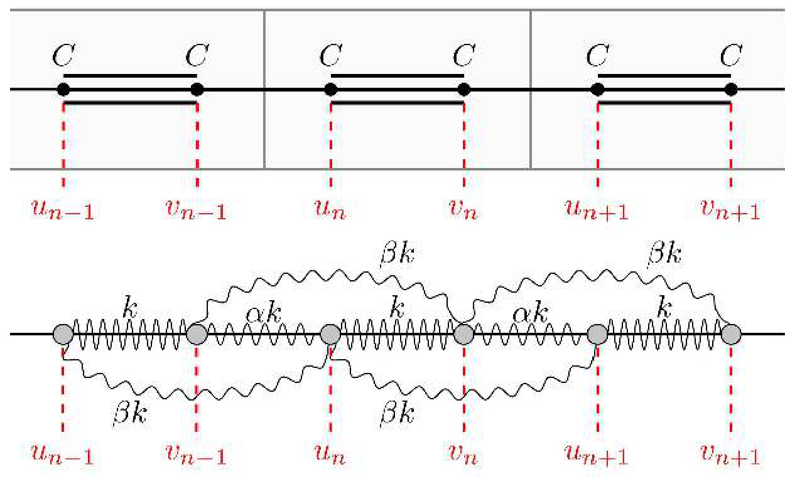
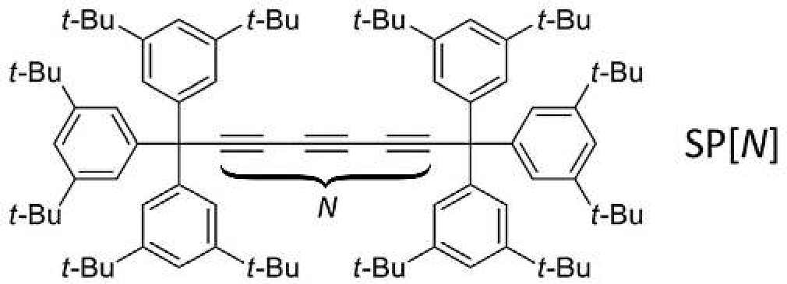
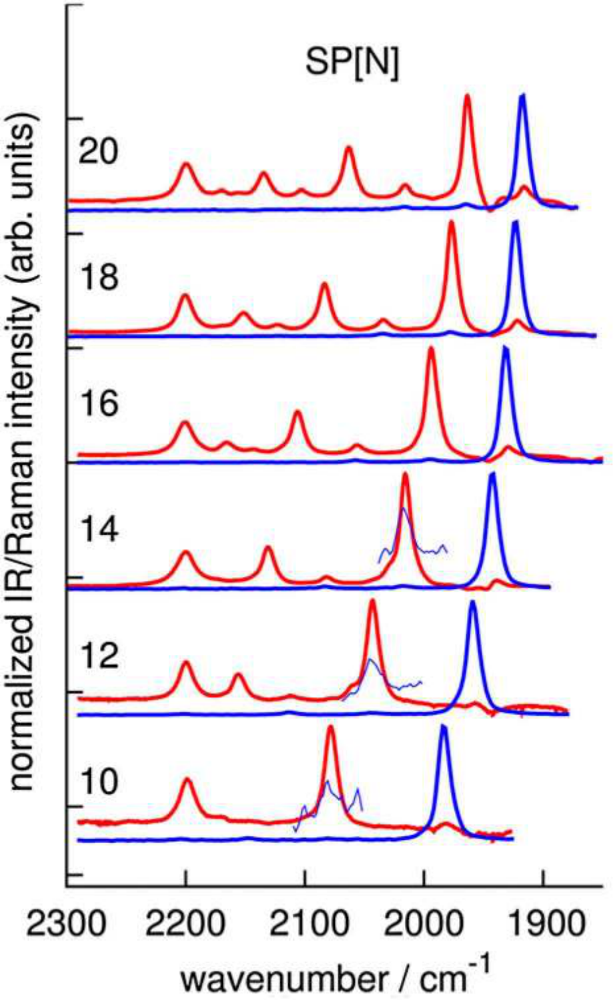

이 문제에서는 폴리인(polyyne) — 구조 안에 탄소 원자 사이의 단일 결합과 삼중 결합이 교대로 나타나는 유기 화합물 — 을 탐구한다. 다음 상수를 사용할 수 있다.
먼저 그림과 같이 단일 결합과 삼중 결합이 교대로 나타나는 1차원 무한 탄소 원자 사슬을 살펴본다. 공‑용수철 모형(ball‑and‑spring model)으로 계를 기술한다. 모든 탄소 원자(공)는 동일한 질량 $m$을 가지며, 삼중 결합은 용수철 상수 $k$인 용수철에, 단일 결합은 용수철 상수 $\alpha k$인 용수철에 대응하고, 추가로 한 칸 건너 원자(공)마다 용수철 상수 $\beta k$인 용수철로 연결되어 있다고 가정한다(시각화 편의상 이러한 용수철은 그림에서 곡선 모양으로 표시되어 있으나, 실제로는 모든 용수철이 수평이다).
다음 표기를 사용한다: $u_n$, $v_n$ — 삼중 결합으로 연결된 왼쪽과 오른쪽 원자(공)의 평형 위치로부터의 변위. 이러한 두 원자가 단위 격자(unit cell)를 이룬다고 한다. 지수 $n$은 모든 정수 값을 취함에 유의하라.

계의 총 에너지의 시간 도함수는 $\dot E = \sum_n (A\dot u_n + B\dot v_n)$으로 표현할 수 있으며, $A$와 $B$는 $u_n$, $v_n$ 및 그들의 2차 시간 도함수를 포함하는 표현식이다. 방정식 $A = 0$과 $B = 0$은 계의 운동을 기술하며 뉴턴 제2법칙과 동등한 것으로 밝혀진다.
다음 형태의 무한 합은 지수 “이동”으로 변환할 수 있음에 유의하라.
$$\sum_n a_n b_{n-1} = \sum_n a_{n+1} b_n.$$이러한 선형 미분방정식 계를 풀기 위해 복소 진폭법(method of complex amplitudes)을 사용한다. 이는 복소 함수 형태의 해를 찾는 것으로, 참 해는 그 실수부(또는 허수부)에 해당한다. 이 문제에서 우리는 평면파 형태의 해에 관심이 있다.
$$u_n(t) = U\cdot\exp(-i\omega t + iqn),\qquad v_n(t) = V\cdot\exp(-i\omega t + iqn).$$얻어진 방정식 계는 반드시 자명한 해 $U = V = 0$을 갖는다. 그러나 우리는 탄소 사슬이 진동하는 다른 경우에 관심이 있다. 다음 사실이 유용할 것이다: 이러한 형태의 선형 방정식 계가 자명하지 않은 해를 가질 필요충분조건은 관계식 $ad - bc = 0$이 만족되는 것이다. 중요하게도, 이 경우 무한히 많은 해가 존재한다: 그것들은 같은 형태이지만 진폭이 다른 진동에 해당한다.
사슬 원자들의 집단적 진동 운동을 포논(phonon)이라 한다. 포논이 사슬을 따라 “달린다”고 말한다. 양 $\omega$는 진동수, $q$는 포논의 준운동량(quasimomentum)이라 한다.
포논 분산 관계(스펙트럼)는 포논 진동수 $\omega$의 준운동량 $q$에 대한 의존성을 가리킨다.
$q\to 0$일 때 $\omega(q)\propto q$인 포논을 음향(acoustic) 포논이라 하고, 그 외의 모든 포논을 광학(optical) 포논이라 한다.
문제 Part A에서 논의한 모형은 이제부터 다룰 유기 화합물인 폴리인을 상당히 정확하게 기술한다. Part A의 모형과 달리, 실제 분자는 유한한 길이를 가지며 이것이 포논 스펙트럼에 영향을 줌에 유의하는 것이 중요하다.
Part A와 같은 사슬을 생각하되, 유한 길이라고 하자. 이것이 $N+1$개의 단위 격자로 이루어진다고 가정한다. 즉 지수 $n$은 0에서 $N$까지의 모든 정수 값을 취한다. 사슬의 양 끝이 고정되어 있다고 가정한다. 즉 변위 $u_0 = u_N = v_0 = v_N = 0$이 어느 시각에든 성립한다.
무한 사슬 모형에서 해는 진행 평면파 형태로 찾아졌다. 이러한 계의 동역학은 선형 방정식 계로 기술되므로, 해들의 임의의 선형 결합도 해가 된다. 즉 함수 집합 $u_n$, $v_n$과 $\tilde u_n$, $\tilde v_n$이 해라면, 함수 집합 $\mu u_n + \eta\tilde u_n$, $\mu v_n + \eta\tilde v_n$ ($\mu$, $\eta$는 임의의 복소수)도 계의 동역학을 기술하는 방정식 계를 만족한다.
사슬에서 서로 반대 방향(즉 준운동량 $q$와 $-q$)으로 전파되는 두 평면파의 계수 $\mu$, $\eta$를 갖는 선형 결합을 생각하자.
유도된 계를 만족하는 계수 $\mu$, $\eta$를 갖는 선형 결합은, 지정된 경계 조건을 갖는 유한 사슬을 기술하는 동역학 방정식의 해를 나타낸다.
2010년대 초, 앨버타 대학교의 캐나다 과학자 웨슬리 A. 샬리푸(Wesley A. Chalifoux)와 릭 R. 티크윈스키(Rik R. Tykwinski)는 대칭 말단캡 폴리인(symmetric endcapped polyyne) SP[$N$]을 합성하는 방법을 개발하였다. 여기서 $N$은 탄소 사슬의 삼중 결합 수를 나타낸다. 분자 구조는 그림에 나와 있다.

말단기(end group)의 물리적 의미는 그것들이 경계 조건을 결정한다는 것이다. 지정된 말단기는 사슬의 양 끝(네 이웃과 결합한 원자)을 고정된 것으로 간주할 수 있게 한다. 질문 B1–B2에서 보았듯이, 사슬의 유한한 크기와 경계 조건의 도입은 포논 스펙트럼에서 이산적인 공명만이 관측되는 결과를 낳는다.
공명의 위치는 빛‑물질 상호작용에 기반한 방법인 적외선(IR) 분광학과 라만(Raman) 분광학을 사용하여 실험적으로 결정할 수 있다. 서로 다른 삼중 결합 수 $N$을 갖는 SP[$N$] 폴리인에 대해, 분자에서 발생할 수 있는 포논의 에너지가 측정된다. 그림은 포논 스펙트럼을 보여준다: 빨간색은 IR 분광학으로 얻은 결과를, 파란색은 라만 분광학 데이터를 나타낸다. 저에너지 광학 포논의 들뜸은 가장 오른쪽 세기 피크에 해당한다(그림에 나온 모든 경우에서 “파란색”으로 나타난다). 포논 에너지 $E$는 그 진동수 $\omega$와 $E = \hbar\omega$ 공식으로 관련된다. 참고: 가로축은 에너지를 역센티미터(inverse centimeter)로 나타낸다. 에너지를 줄(Joule) 단위로 얻으려면 다음 변환 공식을 사용하라.
$$1~\mathrm{cm^{-1}} = 1.99\cdot 10^{-23}~\mathrm{J}.$$질문 B1–B2에서처럼 단위 격자 전체가 아니라 단 하나의 원자만 고정되므로, 계를 기술하기 위해 다음 접근을 사용해야 한다. 사슬의 양 끝에 탄소 원자를 하나씩 가상으로 추가하여 말단 원자에 삼중 결합으로 연결하고, 말단 단위 격자를 고정한다. 이로써 양 끝이 고정된 $N+2$개의 단위 격자로 이루어진 사슬이 된다.
실험적으로 연구된 사슬에서 수 $N$이 충분히 크므로, 위에서 설명한 접근 후 가장자리에 나타난 원거리 결합($\beta k$)은 포논 스펙트럼에 사실상 영향을 주지 않는다. 실험 데이터의 추가 분석에서는 가장 오른쪽 파란색 세기 피크만 사용하고, 나머지는 모두 무시하라.

여러분이 조사한 탄소 사슬은 분자 전자공학에 사용될 수 있어 과학적으로 흥미롭다. 이 문제는 다음 논문에 발표된 실험 결과를 포함한다: Agarwal, N.R., Lucotti, A., Fazzi, D., Tommasini, M., Castiglioni, C., Chalifoux, W.A. and Tykwinski, R.R. (2013), Structure and chain polarization of long polyynes investigated with infrared and Raman spectroscopy. J. Raman Spectrosc., 44: 1398–1410.